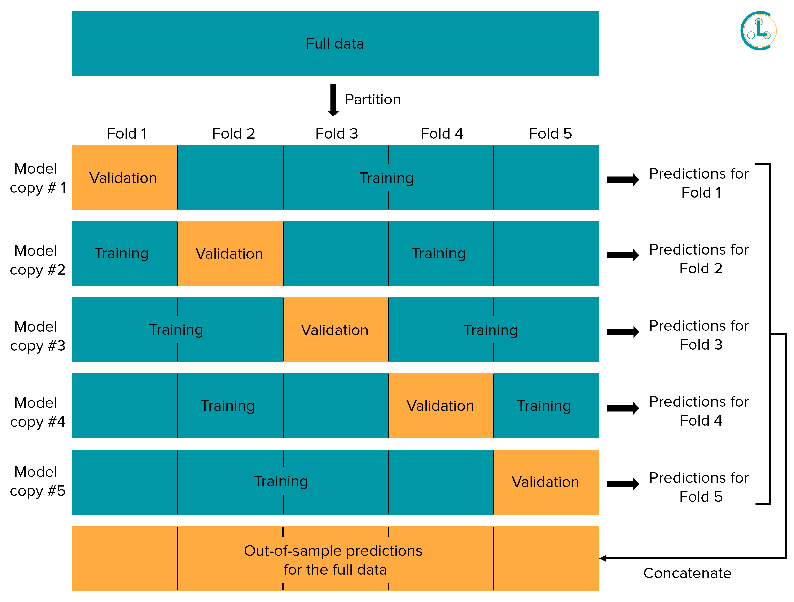

Computing Out-of-Sample Predicted Probabilities with Cross-Validation#
Recall that cleanlab finds label issues in any dataset using some model’s predicted class probabilities output. However, predicted probabilities from your model must be out-of-sample! You should never provide predictions on the same datapoints used to train the model, as these will be overfitted and unsuitable for finding label issues. It is ok if your model was trained on a separate dataset and you are only using cleanlab to evaluate labels in data that was previously held out (e.g., only searching for label issues in the test data).
To find label issues across all your data requires obtaining out-of-sample predicted probabilities for every datapoint in your dataset. This can be done via K-fold cross-validation as described below. Conventionally, cross-validation is used for hyperparameter tuning, but we’ll use it to compute out-of-sample predicted probabilities for the entire dataset.
What are out-of-sample predicted probabilities?#
Predicted probabilities refer to a trained classification model’s probabilistic estimate of the correct label for each datapoint. For example, a model trained to classify images of cats vs. dogs may predict that a new image is a cat with 90% confidence and a dog with 10% confidence - these are the model’s predicted probabilities for one datapoint. Whichever label with the highest predicted probability is often considered the model’s class prediction (i.e., cat for the aforementioned hypothetical image).
Out-of-sample predicted probabilities refer to the model’s probabilistic predictions made only on datapoints that were not shown to the model during training. In contrast, in-sample predicted probabilities on the model’s training data will often be way overconfident and cannot be trusted. For example, in a traditional train-test split of the data, the train set will be shown to the model during its training, whereas the test set will only be used to evaluate the model’s performance after training. Predicted probabilities generated for the test set can thus be considered as out-of-sample.
When using cleanlab, we will typically want to find label issues in all labeled data rather than just the test data. We can use K-fold cross-validation to generate out-of-sample predicted probabilities for every datapoint.
What is K-fold cross-validation?#
The diagram above depicts K-fold cross-validation with K = 5. K-fold cross-validation partitions the entire dataset into K disjoint subsets of data called folds. K independent copies of our model are trained, where for each model copy, one fold of the data is held out from its training (the data in this fold may be viewed as a validation set for this copy of the model). Each copy of the model has a different validation set for which we can obtain out-of-sample predicted probabilities from this copy of the model. Since each datapoint is held-out from one copy of the model, this process allows us to get out-of-sample predictions for every datapoint! We, in particular, recommend applying stratified cross-validation, which tries to ensure the proportions of data from each class match across different folds.
This method of producing out-of-sample predictions via cross-validation is also referred to as cross-validated prediction, out-of-folds predictions, K-fold bagging, etc. It can be easily applied to any sklearn-compatible model by invoking cross_val_predict. An additional benefit is that cross-validation produces significantly superior estimates of how the model will perform on new data.
Here’s pseudocode for implementing K-fold cross-validation with K = 3:
# Step 0
# Separate your data into three equal sized chunks (this is called 3-fold cross validation)
# Data = A B C
# Step 1 -- get oos pred probs for A
model = Model()
model.fit(data=B+C)
out_of_sample_pred_probs_for_A = model.pred_proba(data=A)
# Step 2 -- get oos pred probs for B
model = Model()
model.fit(data=A+C)
out_of_sample_pred_probs_for_B = model.pred_proba(data=B)
# Step 3 -- get oos pred probs for C
model = Model()
model.fit(data=A+B)
out_of_sample_pred_probs_for_C = model.pred_proba(data=C)
# Final step -- combine to get oos pred probs for entire dataset.
out_of_sample_pred_probs = concatenate([
out_of_sample_pred_probs_for_A,
out_of_sample_pred_probs_for_B,
out_of_sample_pred_probs_for_C,
])